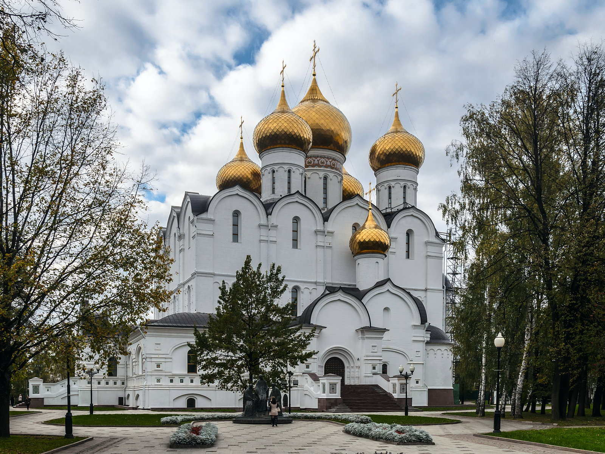
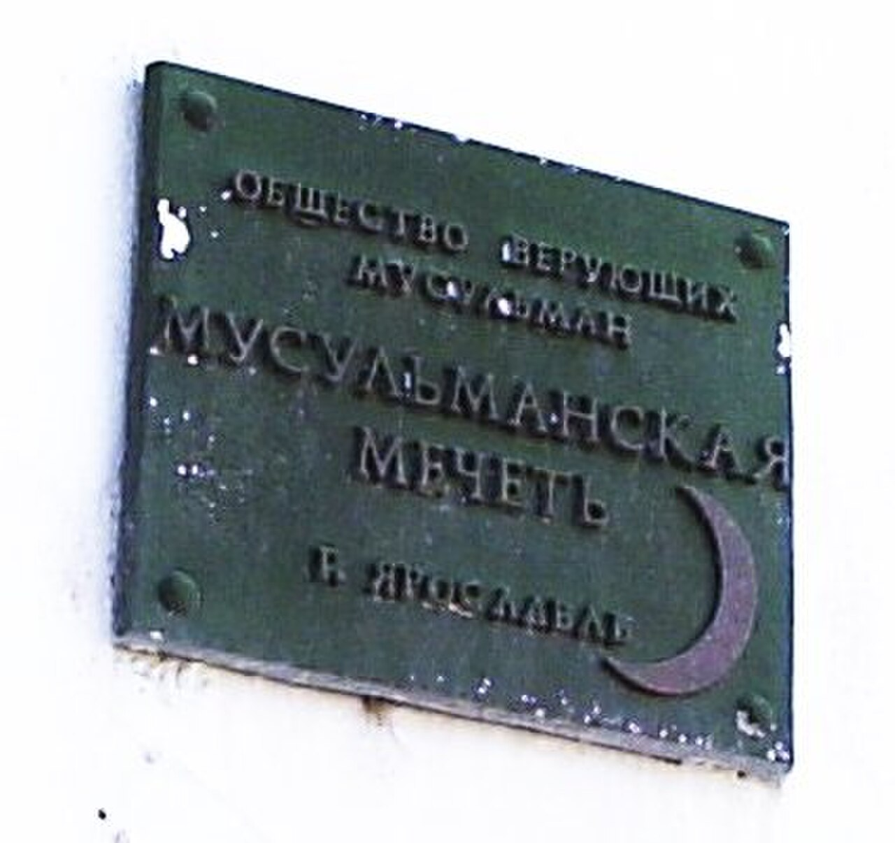
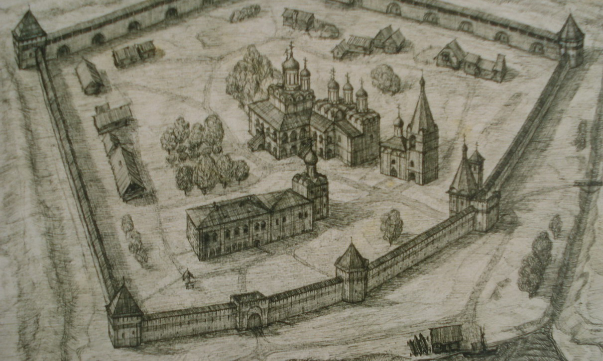
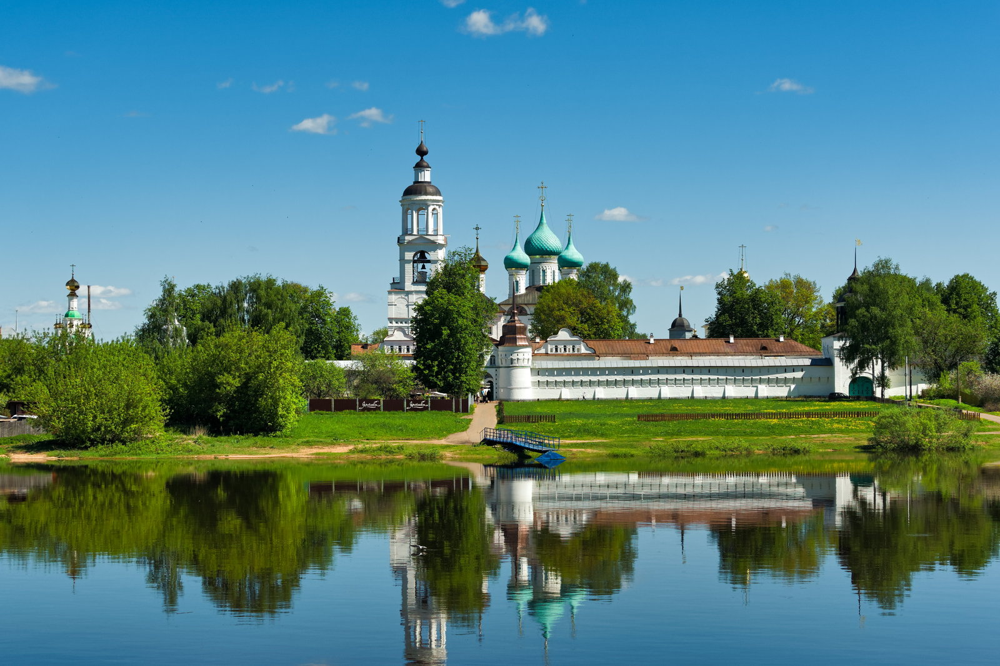
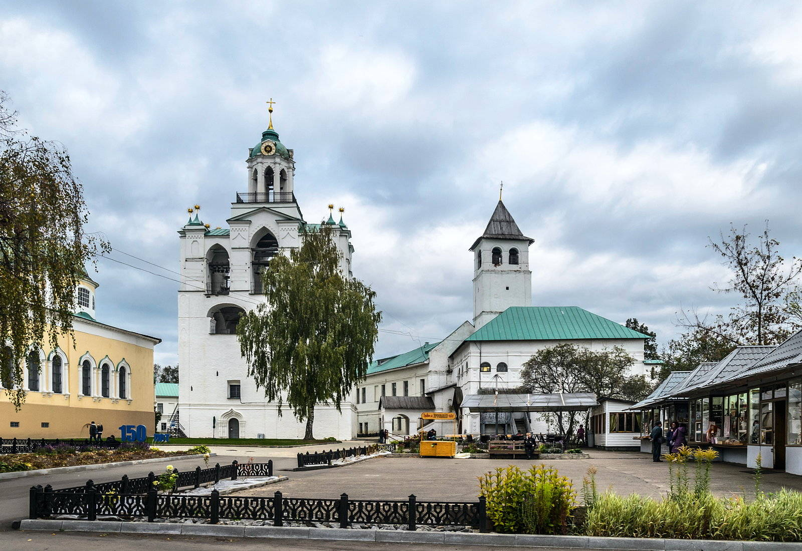

Исторические и справочные гербы


Yaroslavl
Путеводитель. Объектов в этом выпуске: 31.
OTIUM — практика нарочитого досуга. В античном смысле otium — не побег от работы, а время, когда внимание возвращается к памяти, пейзажу и мысли — без прикладного дедлайна.
Мы выстраиваем маршруты для неспешного присутствия, а не для чек-листа достопримечательностей: важно быть в месте, а не «потреблять» виды.
OTIUM — не туроператор. Это приглашение пройтись, остановиться и оставить маршрут незавершённым, если свет на фасаде заслуживает ещё минуты.
Исторические и справочные гербы
Путеводитель. Объектов в этом выпуске: 31.
Ярославль — административный центр Ярославской области, один из старейших городов Золотого кольца на Волге.
Основан в XI веке, входил в торговую сеть Руси; XVII век принёс церковные ансамбли и росписи. Театр имени Волкова, набережные и индустрия сделали Ярославль культурным центром Верхней Волги.
Столица ГУЛАГа в советский период не касалась самого города, но эпоха индустриализации изменила облик. После 1991 года Ярославль включился в маршруты Золотого кольца, подчёркивая театр Волкова, набережные и XVII век как часть общероссийской истории.













